1. Introducción
Nueva York es una de las ciudades más fascinantes del mundo. Su energía, sus rascacielos, sus barrios con personalidad propia y su oferta cultural la convierten en un destino único. Desde Times Square hasta Central Park, pasando por el Museo Metropolitano de Arte o el barrio de Brooklyn, la Gran Manzana nunca decepciona.
Esta guía de 7 días te ayudará a organizar tu viaje para que puedas ver lo más importante sin agobios, con consejos prácticos, lugares donde comer y opciones de alojamiento para todos los presupuestos.
---3. 🏨 Dónde alojarse en Nueva York
🗽 Midtown (Times Square) ⭐⭐⭐⭐
🏛️ Lower Manhattan (Financial District) ⭐⭐⭐⭐
🌳 Upper West Side ⭐⭐⭐⭐
🌉 Brooklyn (Williamsburg / DUMBO) ⭐⭐⭐
🌉 Brooklyn Heights ⭐⭐⭐
🏙️ Queens (Long Island City) ⭐⭐⭐
🍽️ Queens (Astoria) ⭐⭐⭐
🎨 Chelsea ⭐⭐⭐⭐
Mi recomendación personal es alojarse en Midtown si es tu primera vez en Nueva York y quieres estar cerca de todo. Si buscas algo más tranquilo y a la vez bien comunicado, el Upper West Side es una excelente opción. Para presupuestos ajustados, Brooklyn ofrece precios más bajos y un ambiente muy auténtico.
🚇 Metro en Nueva York: Funciona 24/7. Las líneas más útiles para turistas son la 1, 2, 3 (West Side), la 4, 5, 6 (East Side), la A, C, E (conectan JFK con Manhattan) y la L (Brooklyn).
🏠 Alternativas: Los apartamentos turísticos (Airbnb) son legales en Nueva York solo si el anfitrión está presente. Para estancias cortas, los hoteles son más fiables.
🚫 Zonas a evitar: Evita alojarte cerca de la Estación de Penn Station (zona muy transitada pero algo caótica) y en barrios alejados como el Bronx (excepto zonas turísticas como el zoológico o Yankee Stadium).
4. Qué ver en Nueva York
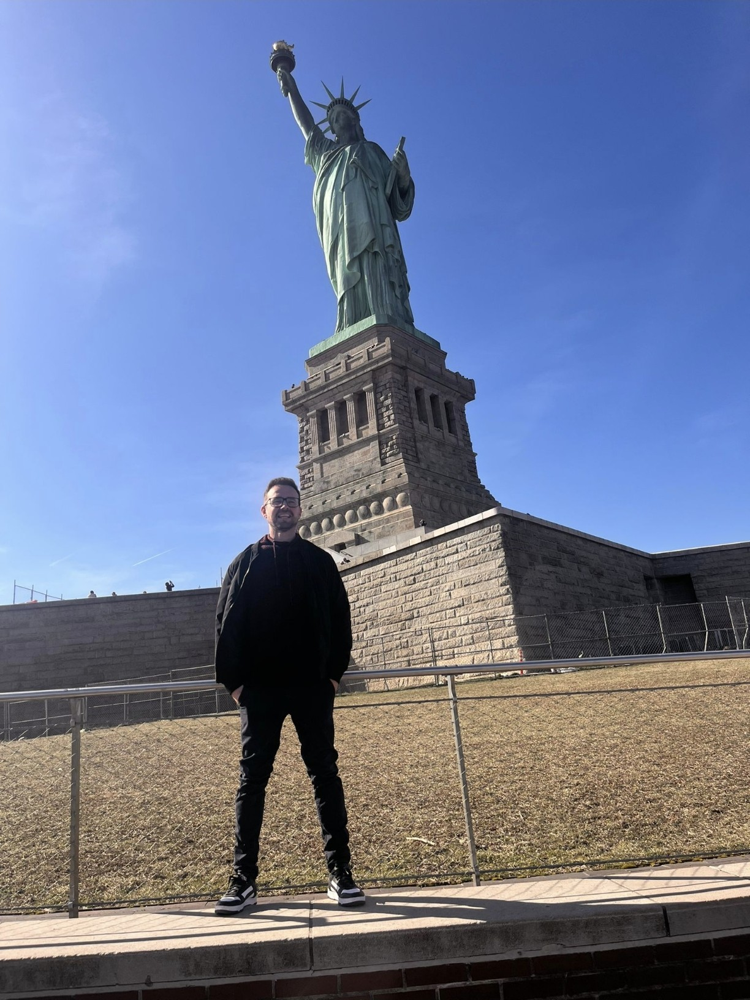
1. 🗽 Estatua de la Libertad y Ellis Island
El símbolo más famoso de Nueva York. La Estatua de la Libertad fue un regalo de Francia a Estados Unidos en 1886. Se puede visitar la isla, el pedestal e incluso la corona (con reserva con meses de antelación).
El ferry también para en Ellis Island, donde se encuentra el Museo de la Inmigración. Es una experiencia emotiva que muestra la historia de los millones de inmigrantes que llegaron a Estados Unidos.
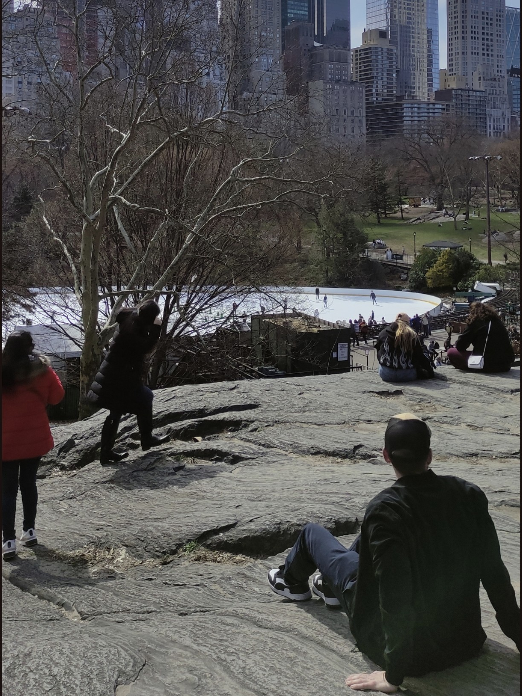
2. 🌳 Central Park
El pulmón verde de Manhattan. Este enorme parque de 3,4 km² ofrece lagos, jardines, senderos, pistas de patinaje y zonas de juego. Es el lugar perfecto para desconectar del bullicio de la ciudad.
Lugares imprescindibles: Bethesda Terrace, Strawberry Fields (homenaje a John Lennon), el Castillo Belvedere, The Mall y el lago. También puedes alquilar una barca de remos o un carruaje de caballos.
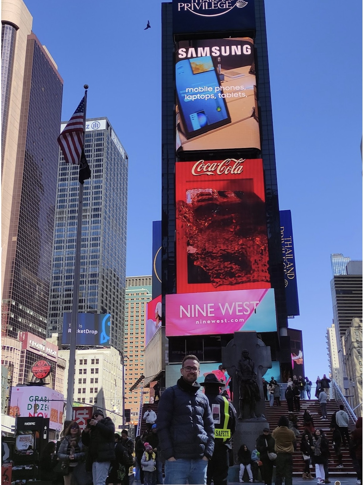
3. 🎭 Times Square
El corazón de Manhattan, famoso por sus enormes pantallas de neón, sus teatros de Broadway y su bullicio constante. Es el epicentro del entretenimiento y la cultura pop.
Además de las pantallas, puedes ver la escalera roja (TKTS) donde se venden entradas de teatro con descuento, el edificio One Times Square y las estatuas de personajes como Superhéroes o Elmo (aunque cobran por la foto).
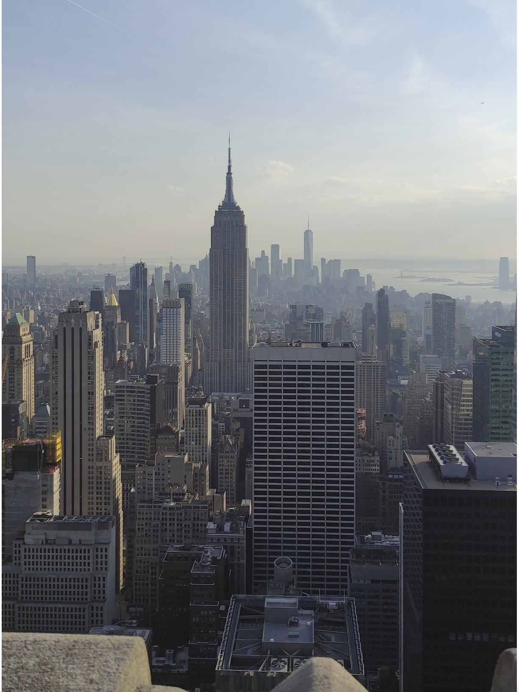
4. 🏙️ Rockefeller Center (Top of the Rock)
Un complejo de edificios art déco que incluye tiendas, restaurantes, estudios de televisión (NBC) y el famoso mirador "Top of the Rock". Desde su azotea se obtienen las mejores vistas de Manhattan, incluido el Empire State Building.
En invierno, la pista de patinaje sobre hielo de Rockefeller Center es una de las más famosas del mundo. En Navidad, el árbol gigante iluminado es un espectáculo.
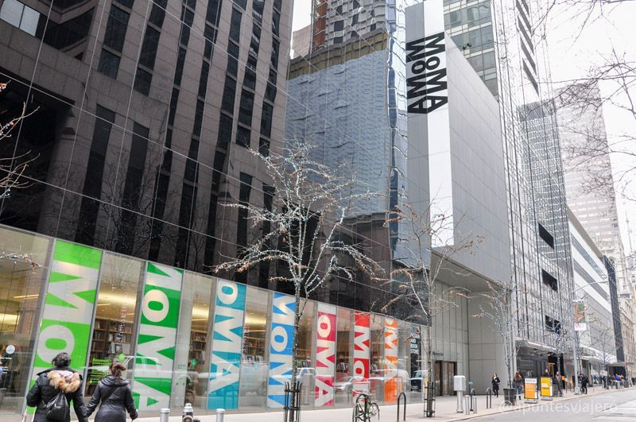
5. 🎨 Museo de Arte Moderno (MoMA)
Uno de los museos de arte moderno más importantes del mundo. Alberga obras maestras como "La noche estrellada" de Van Gogh, "Las señoritas de Avignon" de Picasso y "Los girasoles" de Warhol.
El museo también tiene una excelente colección de fotografía, diseño, cine y arquitectura. El edificio en sí es una obra de arte.
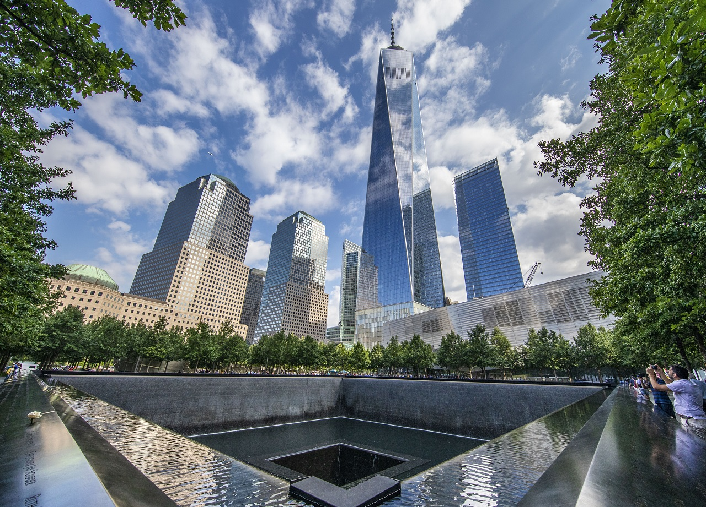
6. 🕊️ 9/11 Memorial y Museo
Un emotivo homenaje a las víctimas de los atentados del 11 de septiembre de 2001. El memorial consta de dos grandes fuentes de agua en el lugar donde se ubicaban las Torres Gemelas.
El museo subterráneo muestra objetos, fotografías y testimonios de aquel día. Es una experiencia impactante que no deja indiferente.
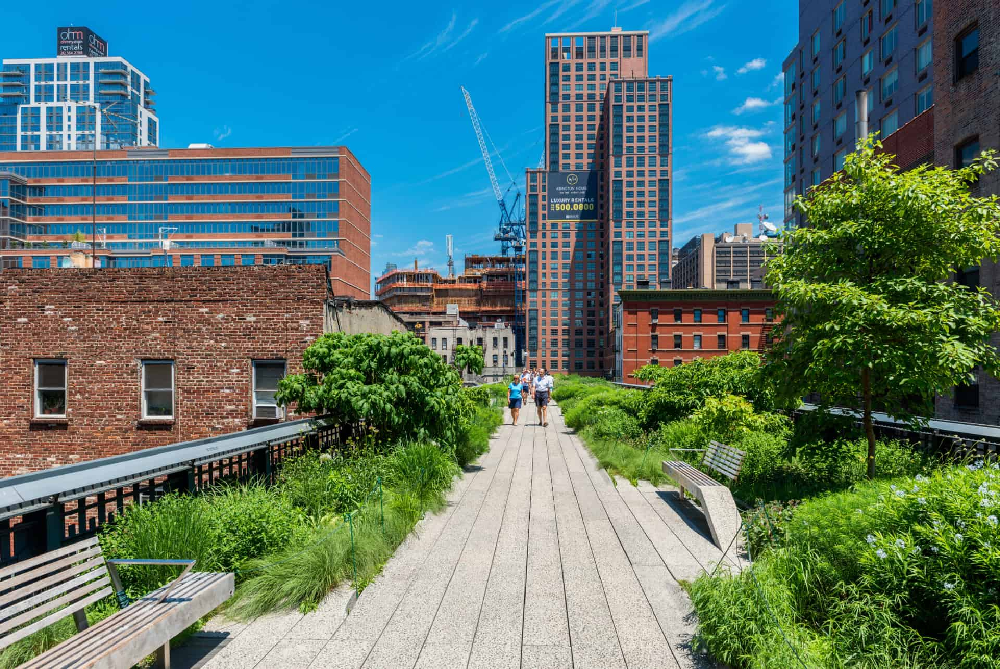
7. 🌿 High Line (Parque elevado)
Un parque lineal construido sobre una antigua vía de tren elevada en desuso. Recorre 2,3 km desde el barrio de Meatpacking District hasta Hudson Yards.
Está lleno de jardines, zonas de descanso, miradores y obras de arte. Es uno de los lugares más originales y agradables de Nueva York.
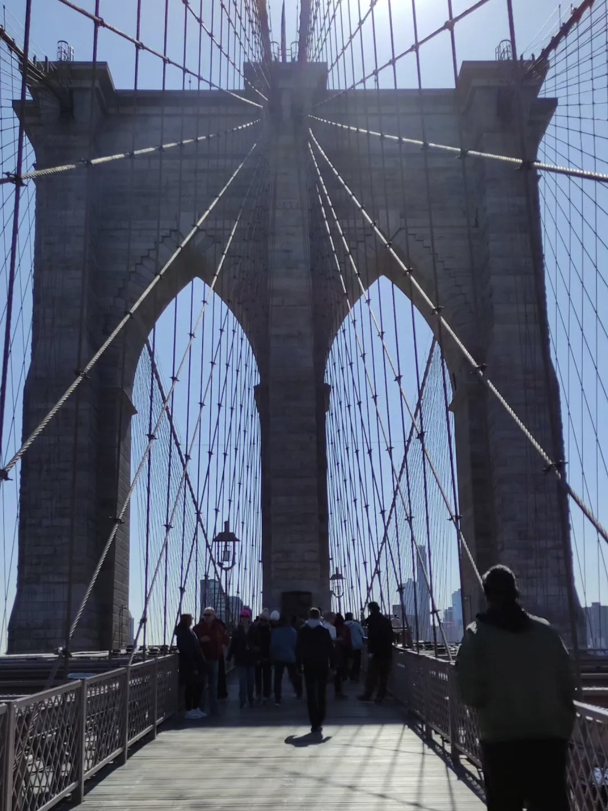
8. 🌉 Puente de Brooklyn
Uno de los puentes colgantes más famosos del mundo, inaugurado en 1883. Conecta Manhattan con Brooklyn y ofrece unas vistas espectaculares del horizonte de la ciudad.
Se puede cruzar a pie o en bicicleta (el paseo dura unos 30-40 minutos). En Brooklyn, la zona de DUMBO (Down Under the Manhattan Bridge Overpass) es ideal para fotos con el puente de fondo.
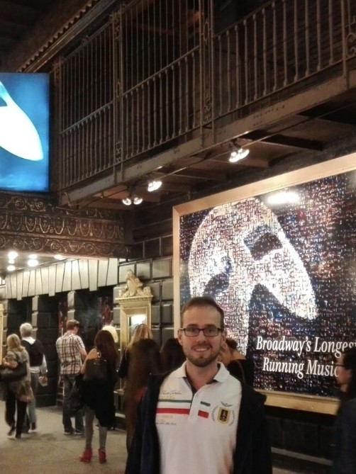
9. 🎭 Broadway (Teatros y musicales)
La calle más famosa del mundo del teatro. Broadway es sinónimo de musicales de primer nivel como "El Rey León", "Wicked", "Hamilton" o "Chicago". Los teatros se concentran en el Theater District, alrededor de Times Square.
Ver un musical en Broadway es una experiencia única, con producciones espectaculares, actores de primer nivel y escenografías impresionantes. Incluso si no hablas inglés, muchos musicales son fáciles de seguir por la música y el lenguaje corporal.
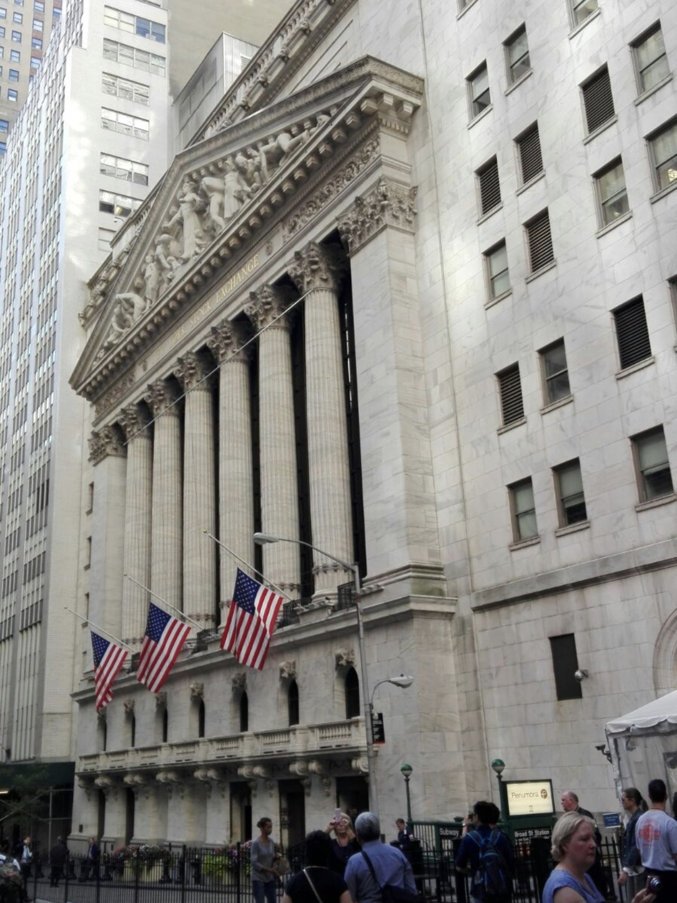
10. 🐂 Wall Street (Financial District)
El corazón financiero de Estados Unidos. Aquí se encuentra la Bolsa de Nueva York (NYSE), la calle Wall Street y el famoso toro de bronce (Charging Bull), símbolo de la fortaleza financiera.
Pasea por la calle más famosa de las finanzas mundiales, tórate una foto con el toro de Wall Street (eso sí, prepárate para las colas) y visita el Federal Hall, donde George Washington tomó posesión como primer presidente de EE.UU.
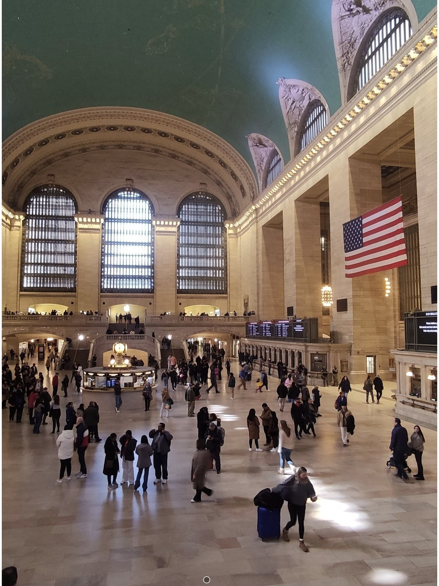
11. 🚉 Grand Central Terminal
Una de las estaciones de tren más famosas del mundo, inaugurada en 1913. Su impresionante sala principal (Main Concourse) tiene techos pintados con la constelación del zodíaco al revés (un error del pintor). Es una obra maestra de la arquitectura Beaux-Arts.
Además de los trenes, Grand Central alberga tiendas, restaurantes (el famoso Oyster Bar) y el mercado navideño en invierno. No te pierdas el reloj de cuatro caras en el centro del Main Concourse, punto de encuentro por excelencia.
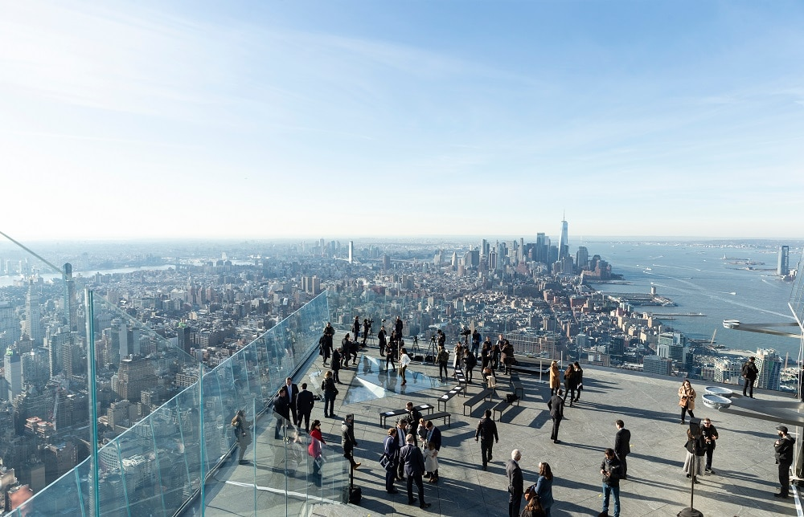
12. 🚀 Edge (Hudson Yards)
El mirador más alto de Nueva York (335 metros). Se encuentra en la planta 100 del 30 Hudson Yards y tiene una plataforma de observación con suelo de cristal y paredes inclinadas que te permiten asomarte al vacío. Las vistas de Manhattan, el río Hudson y Nueva Jersey son espectaculares.
También tienen una terraza al aire libre con bar y asientos. El edificio en sí es una obra de arquitectura moderna.
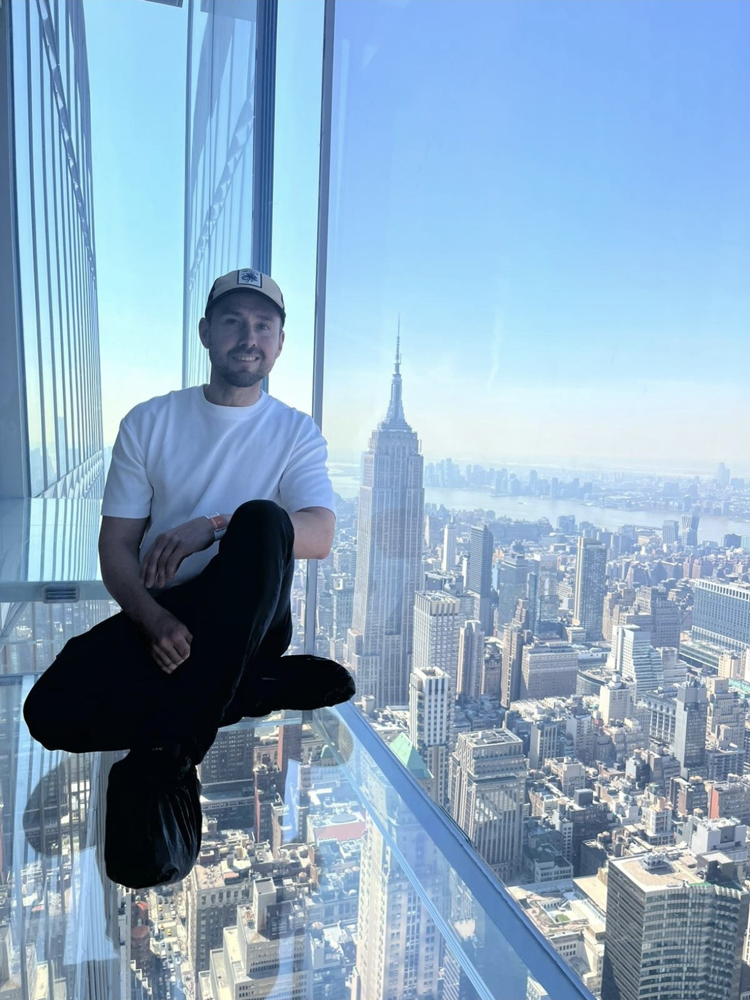
13. ✨ Summit One Vanderbilt
Un mirador de última generación en la planta 93 del One Vanderbilt (junto a Grand Central). Es famoso por sus salas de espejos infinitos, globos de helio gigantes y efectos visuales de luz y sonido. Es más que un mirador, es una experiencia inmersiva.
Tiene varias salas: "Air" (con globos de helio que flotan), "Reflections" (con espejos que crean ilusiones infinitas), "Levitation" (con suelo de cristal) y "Apres" (un bar con vistas). Las vistas del Chrysler Building y del Empire State son espectaculares.
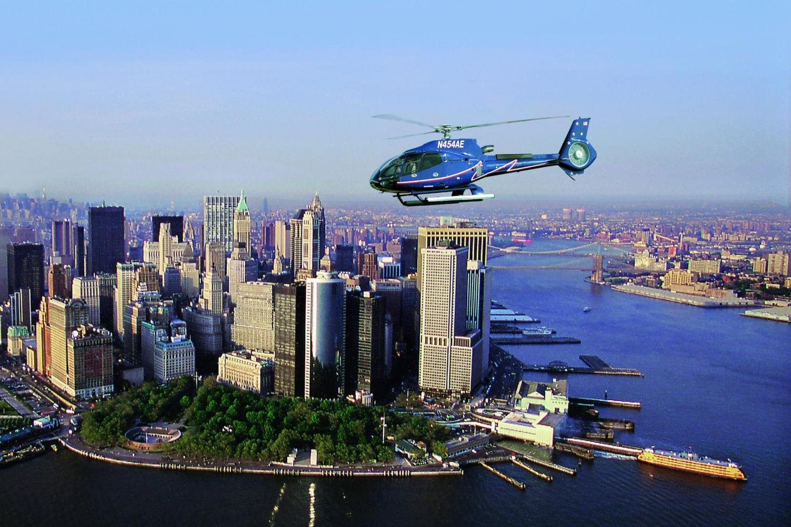
14. 🚁 Paseo en helicóptero por Nueva York
Una experiencia única para ver Nueva York desde las alturas. Los vuelos en helicóptero sobrevuelan la Estatua de la Libertad, el Puente de Brooklyn, Central Park, el Empire State Building y el One World Trade Center. Es la forma más espectacular de ver la ciudad.
Hay diferentes duraciones (15-30 minutos) y opciones (puertas abiertas o cerradas). La mayoría salen del helipuerto del río Hudson o del aeropuerto de Newark.
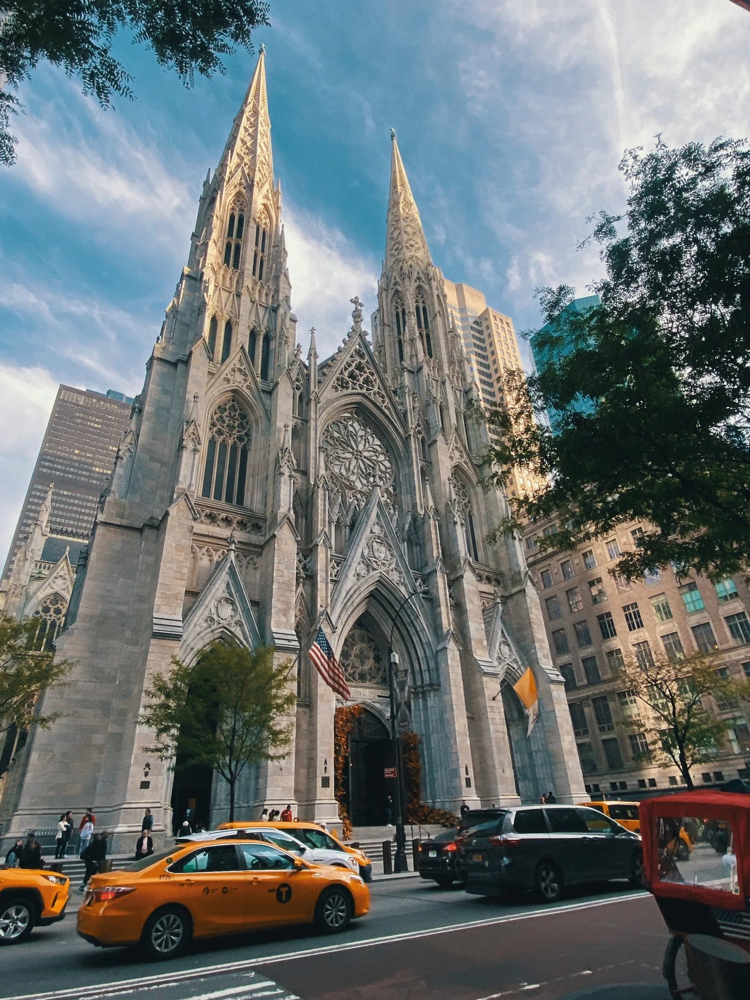
15. ⛪ Catedral de San Patricio (St. Patrick's Cathedral)
La catedral católica más grande de Estados Unidos, ubicada en la Quinta Avenida (frente al Rockefeller Center). Es una obra maestra del estilo neogótico, construida en 1879. Sus agujas gemelas de 100 metros de altura son un icono de la ciudad.
El interior es impresionante: vidrieras de colores, altares de mármol, el órgano (con más de 7.000 tubos) y la capilla de Nuestra Señora. Es un oasis de paz en medio del bullicio de Manhattan.
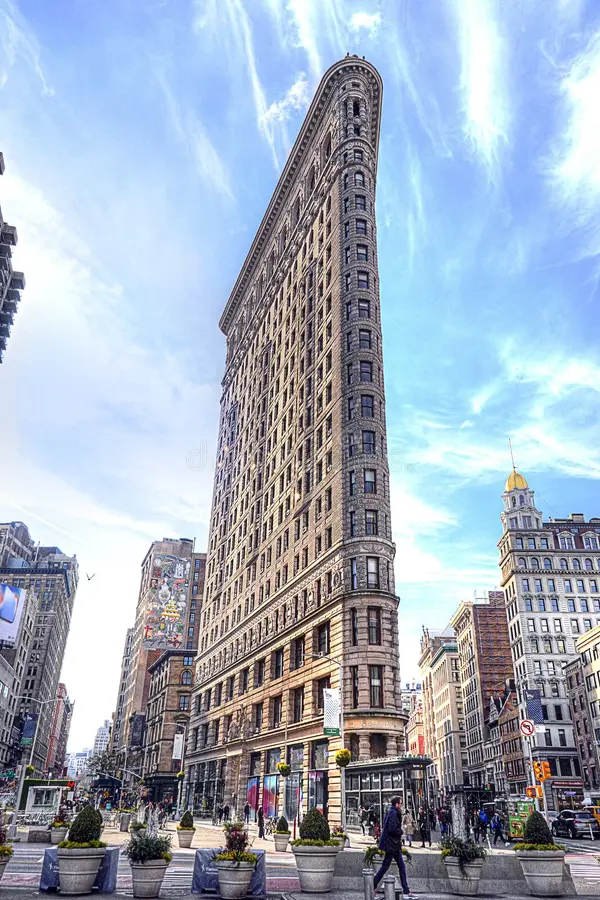
16. 📐 Flatiron Building
Uno de los rascacielos más emblemáticos de Nueva York, famoso por su forma triangular y puntiaguda (como una plancha de ropa). Fue construido en 1902 y es uno de los edificios más fotografiados de la ciudad.
Está ubicado en la intersección de la Quinta Avenida y Broadway, en el barrio de Flatiron District. El edificio tiene 22 plantas y 87 metros de altura. Aunque no se puede visitar por dentro, la vista exterior es imprescindible.
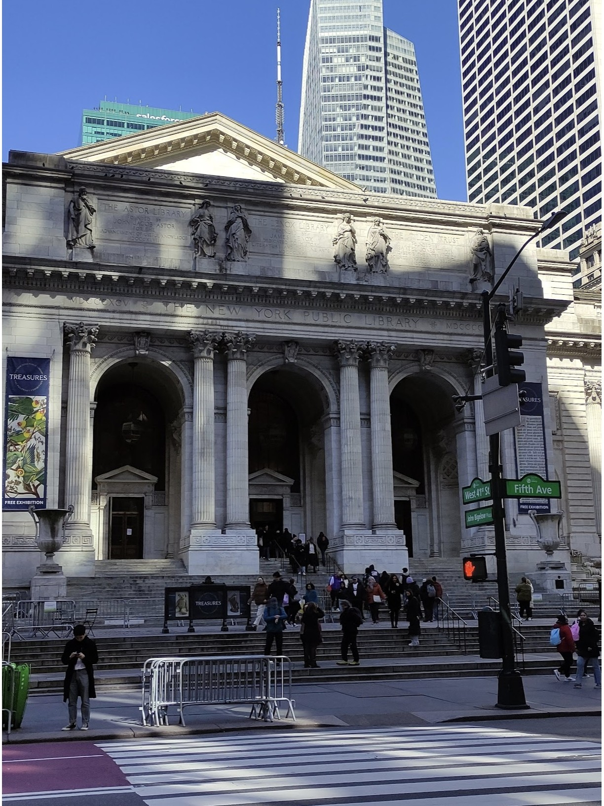
17. 📚 New York Public Library (Stephen A. Schwarzman Building)
Una de las bibliotecas más impresionantes del mundo, ubicada en la Quinta Avenida (entre las calles 40 y 42). Su fachada de mármol blanco y sus famosos leones de piedra (Patience y Fortitude) la convierten en un icono de la ciudad.
El interior es espectacular: la Sala de Lectura Principal (Rose Main Reading Room) tiene techos de 15 metros de altura, lámparas de bronce y grandes ventanales. Es una de las salas más bonitas de Nueva York. La entrada es gratuita.
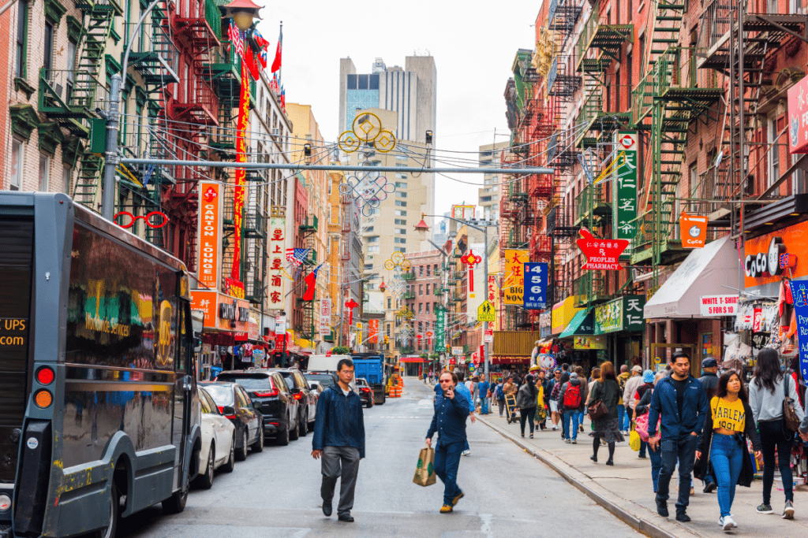
18. 🏮 Chinatown (Barrio chino)
El barrio chino más grande del hemisferio occidental. Sus calles están llenas de tiendas de recuerdos, mercados de frutas exóticas, farmacias tradicionales y, sobre todo, restaurantes de comida china auténtica (y barata).
Lugares imprescindibles: la Puerta de Chinatown (Chatham Square), la calle Mott (llena de restaurantes), el Columbus Park (donde los mayores juegan al ajedrez chino) y el Museo de la Inmigración China. La comida es el principal atractivo: dim sum, pato laqueado, fideos hechos a mano...

19. 🍝 Little Italy (Pequeña Italia)
El antiguo barrio italiano de Nueva York, ahora reducido a unas pocas calles (principalmente Mulberry Street). Es famoso por sus restaurantes italianos, tiendas de productos importados y el ambiente festivo.
Lo mejor es pasear por Mulberry Street, cenar en una trattoria familiar, comprar cannoli y gelato en las pastelerías italianas (Ferrara Bakery es la más famosa) y visitar la Iglesia de la Preciosísima Sangre (Most Precious Blood Church). En septiembre, la Fiesta de San Genaro (Feast of San Gennaro) llena las calles de puestos de comida y música.
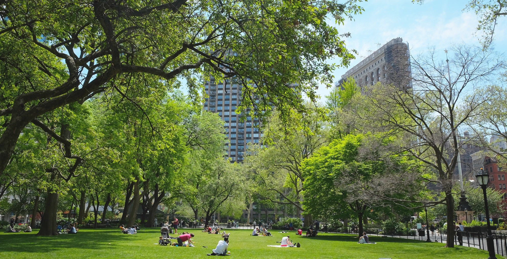
20. 🌳 Madison Square Park
Un pequeño parque en el barrio de Flatiron District, rodeado de rascacielos icónicos como el Flatiron Building y el MetLife Tower. Es un oasis de paz en medio del bullicio de Manhattan.
El parque tiene jardines, zonas de césped, un estanque y varias esculturas temporales (el famoso "Vessel" original estuvo aquí antes de mudarse a Hudson Yards). Es el lugar perfecto para descansar después de visitar el Flatiron Building, hacer un picnic o tomar un café en el Shake Shack (el primero del mundo, fundado aquí).
Compra el New York Pass (80-250$) si vas a visitar muchas atracciones. Incluye la entrada a más de 100 lugares (Estatua de la Libertad, MoMA, Top of the Rock, etc.) y te ahorra tiempo en colas. Calcula cuánto vas a usar antes de comprarlo.
El metro es la mejor forma de moverse. Compra una MetroCard o usa tu tarjeta contactless (OMNY) para pagar viaje a viaje. El tope diario es de 33$.
{kind=link}
{kind=link}
{kind=link}
{kind=link}
{kind=link}
{kind=link}
{kind=link}
{kind=link}
{kind=link}
{kind=link}
{kind=link}
{kind=link}
{kind=link}
{kind=link}
{kind=link}
{kind=link}
{kind=link}
{kind=link}
{kind=link}